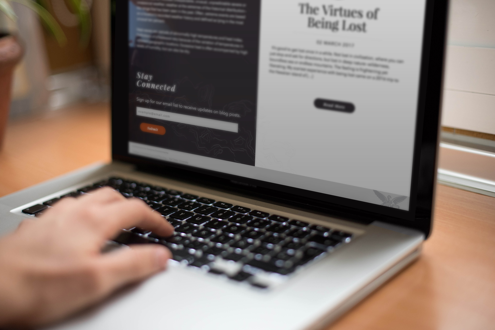
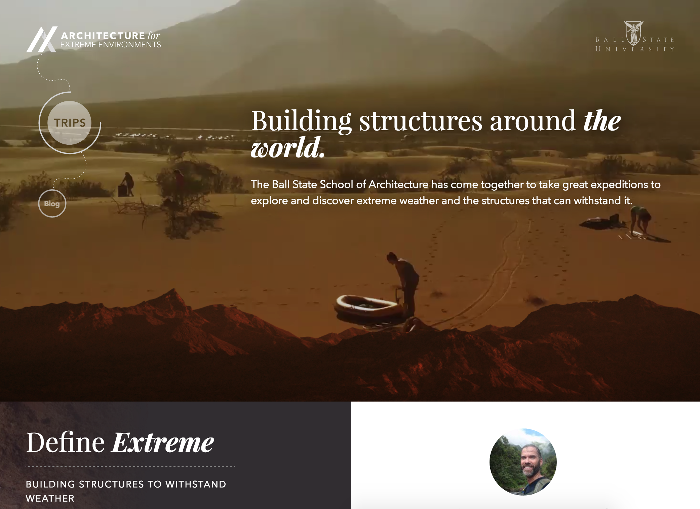
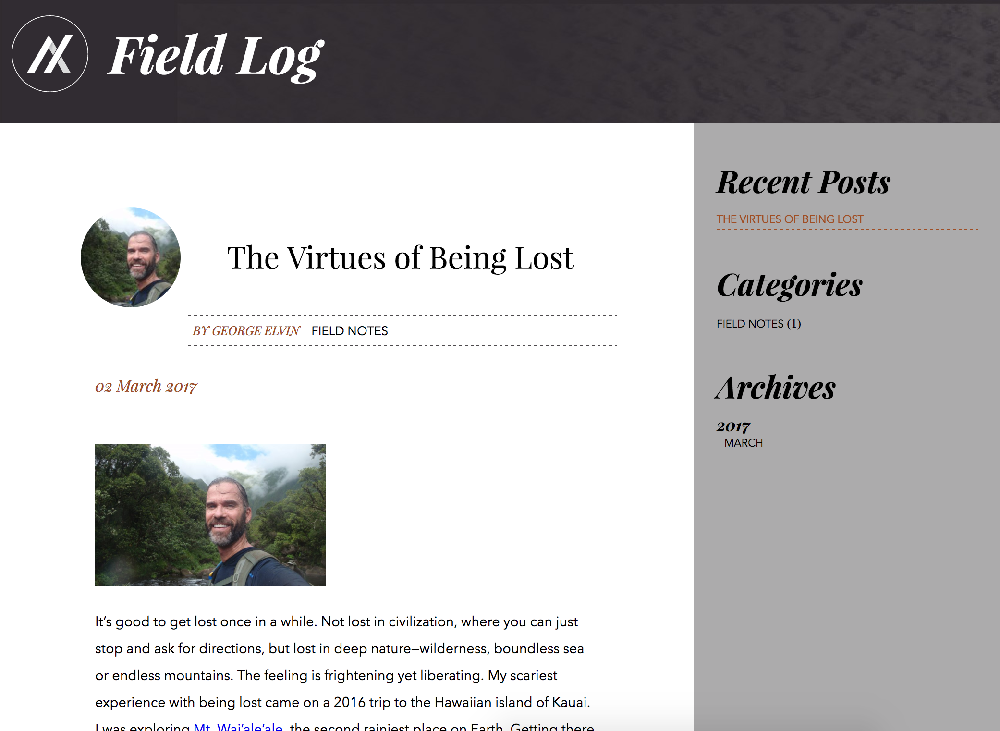
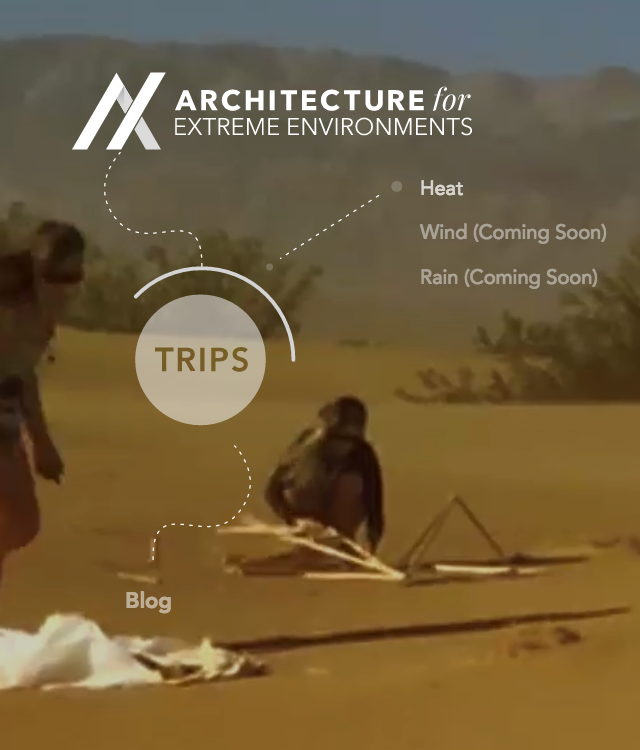
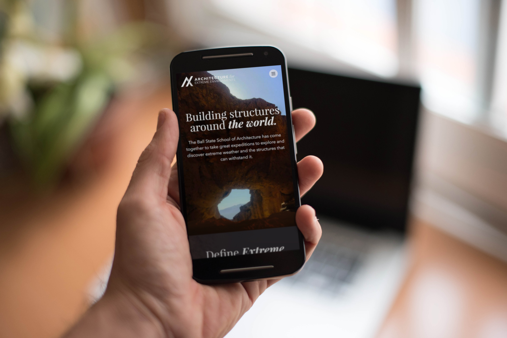
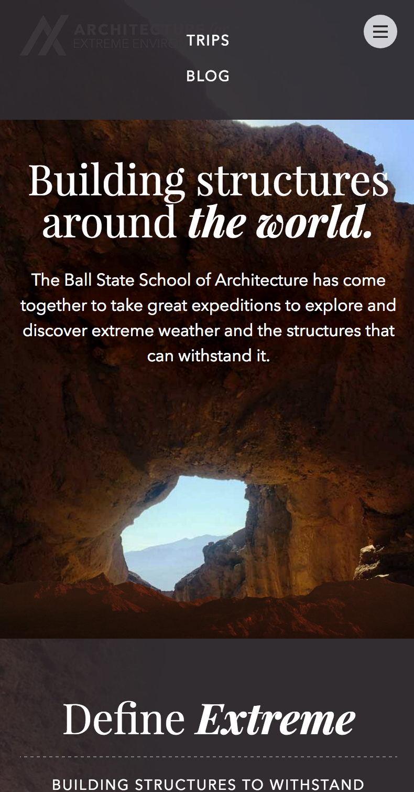
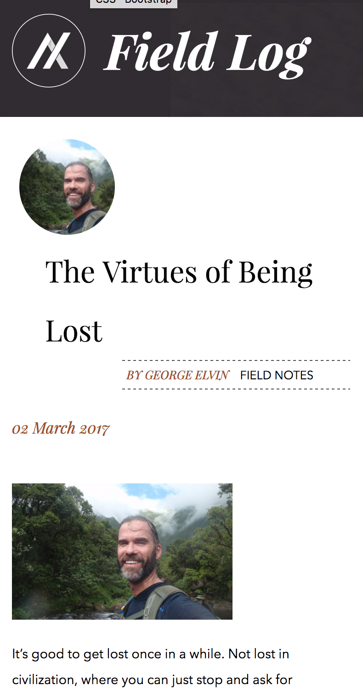

Architecture for Extreme Environments Blog
Architecture for Extreme Environments is a class at Ball State that sends architecture students to build structures in different climates. The Digital Corps designed them a blog to keep showcase the yearly trips to investors, architects, and students. Check it out here: Architecture for Extreme Environments
PROJECT MANAGER: Leah Callahan DESIGNERS: Sydney Patton, Grace Winiger, Anna Weddle, Emily Mixter, Ian Buchanan DEVELOPERS: Brandon Groff, Michael Adair Video: Jacob Guenin, Dustin Grissom COMM: Miller Kern UX: Viveka Melo, Madeleine Jordan






